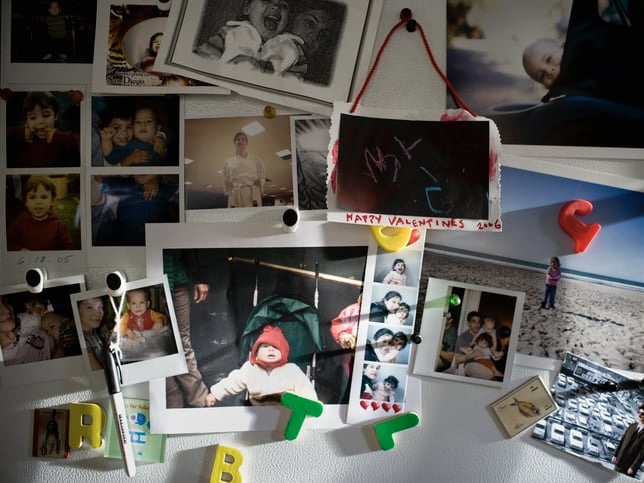

Di dunia yang membuat begitu banyak mata tertuju untuk melihat keindahan tubuh perempuan, kamu justru memilih untuk menundukkan pandanganmu pada bait-bait paragraf di antara lembaran halaman usang yang sedang kamu baca. Kacamata membingkai wajahmu yang menunduk, matamu bergerak perlahan mengikuti deretan kata tentang dunia yang mungkin tidak pernah kamu lihat sendiri; tentang politik, agama, ekonomi, sejarah, filsafat, atau mungkin sebuah cerita fiksi tentang manusia-manusia yang bahkan tidak pernah benar-benar ada.
Entah kenapa, ada sesuatu yang sangat menarik bagiku dari pemandangan itu.
Di saat dunia terus menawarkan hiburan yang bisa selesai dalam beberapa detik, kamu bersedia duduk diam selama berjam-jam untuk mengikuti pemikiran seseorang melalui ratusan halaman. Di saat satu video belum selesai dan algoritma sudah menawarkan sepuluh video lainnya, kamu memilih untuk tinggal lebih lama. Tinggal pada satu gagasan. Satu cerita. Satu pertanyaan. Satu pemikiran manusia yang mungkin ditulis puluhan atau bahkan ratusan tahun sebelum kamu lahir.
Mungkin itu sebabnya aku ingin jatuh cinta dengan ia yang membaca.
Aku ingin membicarakan Kafka dan Tolstoy denganmu. Aku ingin suatu hari membaca buku yang sama lalu memperdebatkan tokoh-tokohnya, mempertanyakan keputusan-keputusan mereka, dan entah bagaimana percakapan tentang sebuah cerita fiksi bisa membawa kita berbicara tentang kehidupan kita sendiri. Aku ingin mendengar pendapatmu tentang sesuatu yang mungkin selama ini belum pernah terpikirkan olehku, lalu diam-diam berpikir, “Oh, I never thought about it that way.”
Di saat yang sama, aku ingin mentadabburi Al-Qur'an bersamamu di setiap sudut bumi yang nanti akan kita jelajahi. Mungkin kita sedang berada di sebuah kota yang sama sekali asing, jauh dari rumah, lalu menemukan sebuah ayat yang entah kenapa terasa begitu dekat dengan kehidupan yang sedang kita jalani. Aku ingin membaca dunia bersamamu, tapi juga membaca kembali diri kita melalui semua hal yang kita temukan di dalamnya.
Aku ingin bersamamu dan merasa bahwa tidak ada batas dari apa yang bisa kita bicarakan. Karena banyaknya buku yang kamu habiskan seperti samudra yang begitu dalam, aku ingin selalu merasa bahwa masih ada sesuatu yang belum kuketahui tentangmu. Ada pemikiran yang belum pernah kamu ceritakan, sebuah buku yang pernah mengubah cara pandangmu, atau sebuah kalimat yang pernah tinggal lama di kepalamu. Aku tidak ingin kehabisan bahan bicara saat bersamamu.
Aku ingin berargumen dan berdebat denganmu tentang politik di Indonesia. Aku ingin kita mungkin memulai percakapan dari satu berita yang kita lihat pagi itu, lalu entah bagaimana satu jam kemudian kita sudah membahas sistem pendidikan, ekonomi, korupsi, kebijakan publik, orang-orang yang seharusnya berada di pemerintahan, dan kenapa negara sebesar Indonesia masih memiliki begitu banyak hal yang membuat rakyatnya harus berjuang lebih keras dari seharusnya. Membahas rezim yang hanya sibuk mementingkan isi perutnya sendiri, sementara keputusan-keputusan yang mereka buat justru perlahan meracuni perut yang lainnya.
Justru aku ingin kadang-kadang merasa kesal karena argumenmu ternyata masuk akal. Haha.
Aku ingin duduk berhadapan denganmu, merasa sangat yakin bahwa pendapatku benar, lalu beberapa menit kemudian harus mengakui, “Okay, kamu benar juga.” Aku ingin kamu membantahku ketika aku salah, bukan hanya mengangguk karena ingin menjaga suasana tetap nyaman. Aku ingin kita bisa berbeda pendapat tanpa merasa bahwa perbedaan itu adalah ancaman. Ada sesuatu yang menarik dari seseorang yang pikirannya tak bisa kubaca. Seseorang yang unpredictable, setiap hal yang kamu sampaikan adalah hal baru yang tak kusangka-sangka.
Dan mungkin, setelah berdebat panjang, membaca berbagai sudut pandang, mencoba memahami kenapa sebuah keputusan diambil dan siapa yang sebenarnya diuntungkan dari keputusan tersebut, kita akhirnya menatap satu sama lain dan sampai pada kesimpulan yang mungkin, untuk sekali ini, tidak jauh berbeda:
“Ya... pemerintahan saat ini memang tidak kompeten.”
Aku ingin percakapan kita bisa dimulai dari sesuatu yang sederhana, lalu entah bagaimana berakhir dengan pembahasan tentang manusia, Tuhan, sejarah, keluarga, ekonomi, atau kehidupan yang bahkan tidak kita rencanakan untuk dibicarakan sebelumnya. Aku ingin suatu hari kita membicarakan Kafka, keesokan harinya membahas kebijakan ekonomi Indonesia, lalu malam berikutnya membuka Al-Qur'an dan mencoba memahami satu ayat yang terasa begitu dekat dengan kehidupan kita.
Aku ingin hidup bersamamu dan tidak pernah merasa bahwa dunia kita kehabisan hal untuk dibicarakan.
Mungkin terdengar sangat sederhana, tapi menurutku salah satu bentuk kehidupan yang paling indah adalah bisa menghabiskan puluhan tahun bersama seseorang dan tetap memiliki sesuatu untuk dibicarakan. Setelah semua cerita tentang masa kecil sudah kamu dengar. Setelah kamu tahu makanan kesukaannya, kebiasaan buruknya, cerita keluarganya, dan mungkin bahkan sudah bisa menebak apa yang akan ia katakan sebelum ia selesai berbicara. Setelah puluhan tahun, aku masih ingin bisa duduk bersamamu dan mendengar sesuatu yang baru. Bukan karena aku belum mengenalmu, tapi karena kamu tidak pernah berhenti bertumbuh.
Semua pemikiran-pemikiran besar di dunia lahir dari orang-orang yang gemar membaca. Marie dan Pierre Curie, pasangan peraih Nobel Kimia, dan Marie, perempuan pertama yang berdiri di antara ilmuwan-ilmuwan besar kala itu, bahkan pernah mengatakan bahwa ia tidak membenci buku-buku yang membosankan. Artinya, ia bersedia mengikuti pemikiran yang rumit dan melelahkan karena memiliki keinginan untuk terus mencari kebenaran. Cukup rendah hati untuk mengakui bahwa masih banyak yang belum diketahui dan ingin mengetahui lebih banyak lagi.
Habibie dan Ainun, misalnya, pasangan legendaris yang mengubah Indonesia, memiliki perpustakaan pribadi di kediaman mereka, The Habibie & Ainun Library, yang menyimpan sekitar 5.000 buku koleksi mereka.

Dalam perjalananku di Norwegia pada bulan Maret 2025, aku pernah melihat gambaran kecil tentang bentuk kehidupan yang mungkin ingin kumiliki suatu hari nanti.
Aku menghabiskan beberapa minggu tinggal bersama Coby dan Jaap, sepasang host parents-ku di Trondheim. Kota yang tenang di ujung utara Norwegia, tempat kampus teknologi terbesar di Norwegia berdiri, dan tempat musim dingin terasa begitu panjang. Tinggal bersama mereka membuatku mengenal rutinitas sederhana yang terasa sangat Scandinavian; memulai pagi dengan teh hangat, roti lapis, brunost atau keju cokelat manis khas Norwegia, dan cheese slicer yang selalu mereka gunakan untuk memotong keju dengan begitu rapi.
Di luar rumah, udara dingin dan jalanan tertutup salju. Tapi rumah mereka terasa sangat hangat. Mungkin karena rumah itu dipenuhi oleh kehidupan yang sudah mereka jalani selama puluhan tahun. Perjalanan-perjalanan yang pernah mereka lakukan, benda-benda yang mereka bawa pulang dari berbagai tempat, karya seni, dan tentu saja, buku-buku. Kulkas mereka terisi dengan magnet-magnet dan polaroid dari setiap negara yang mereka jelajahi bersama. Lima puluh tahun bersama, bayangkan. Dan rak buku yang penuh dengan buku-buku yang mereka beli di sudut kota setiap negara yang mereka jelajahi. Tentang pemikiran besar, sejarah, atau fiksi.

Ada satu kebiasaan mereka yang sampai sekarang masih tinggal di kepalaku. Setelah sarapan, Coby dan Jaap sering menghabiskan waktu dengan membaca buku masing-masing. Mereka duduk bersama, membaca hal yang berbeda, lalu pada suatu waktu mulai membicarakan apa yang mereka temukan. Buku terbaru yang mereka baca, sebuah pemikiran yang menarik, sesuatu yang mereka setujui, atau mungkin justru tidak mereka setujui.
Aku melihat dua orang yang telah menghabiskan begitu banyak tahun bersama, tapi tetap memiliki sesuatu yang baru untuk dibawa ke dalam percakapan mereka.
Dan entah kenapa, aku melihat mereka lalu berpikir,
I see my future there.
Aku melihat dua orang yang sudah berada jauh di usia yang mungkin sekarang masih terasa sangat jauh bagiku, tapi mereka belum berhenti menemukan dunia. Mereka mungkin sudah menghabiskan puluhan tahun bersama, sudah mengetahui begitu banyak cerita satu sama lain, sudah melewati fase-fase kehidupan yang bahkan sekarang belum bisa kubayangkan. Tapi mereka masih bisa duduk di meja yang sama, membawa sesuatu yang baru dari dunia masing-masing, dan kemudian membaginya satu sama lain.
Mungkin itu yang ingin kumiliki suatu hari nanti.
Seseorang yang tetap berjalan bersamaku menuju kehidupan yang semakin luas. Aku tidak ingin hubungan membuat dunia kami semakin kecil dan akhirnya hanya berputar pada pekerjaan, tagihan, catatan pajak, rumah, anak-anak, lalu mengulang semuanya lagi setiap hari. Aku ingin kami tetap menjadi manusia yang terus memiliki rasa penasaran. Tetap membaca. Tetap belajar. Tetap menemukan sesuatu yang membuat kami berkata, “Eh, aku baru tahu sesuatu.”
Aku ingin ketika kami sudah berumur 70 tahun nanti, mungkin rambut kami sudah berubah menjadi putih dan perjalanan tidak lagi secepat ketika kami masih muda, kami masih bisa duduk bersama di meja makan. Tak banyak yang ditawarkan dari tubuh kami berdua, dan mungkin dengan teh hangat di tangan, mungkin dengan kacamata baca yang sudah semakin tebal, haha. Kamu membaca bukumu dan aku membaca bukuku. Lalu salah satu dari kami menutup bukunya dan berkata,
“Aku baru baca sesuatu yang menarik.”
Dan setelah puluhan tahun hidup bersamaku, aku ingin kamu masih menjawab,
“Ceritain.”
Karena menurutku, mungkin itu salah satu bentuk cinta yang paling indah. Bukan ketika kita sudah mengetahui semuanya tentang seseorang dan akhirnya tidak ada lagi yang bisa ditemukan. Tapi ketika kita terus menjalani kehidupan masing-masing dengan rasa penasaran, terus membaca halaman-halaman baru, lalu pulang kepada satu sama lain untuk berkata, “Aku menemukan sesuatu hari ini.”
Mungkin buku memang hanya benda bagi sebagian orang. Deretan halaman dengan terlalu banyak tulisan yang harus diselesaikan. Tapi bagiku, seseorang yang membaca sering kali sedang melakukan sesuatu yang lebih besar daripada sekadar menyelesaikan sebuah buku. Ia sedang membiarkan dirinya bertemu dengan pemikiran manusia lain. Ia sedang mencoba memahami kehidupan yang belum pernah ia jalani, tempat yang belum pernah ia datangi, dan manusia-manusia yang mungkin tidak akan pernah ia temui.
Melalui buku, seseorang yang hidup ratusan tahun sebelum kita lahir bisa duduk bersama kita. Kita bisa mengetahui apa yang ia pikirkan tentang manusia, apa yang ia percayai, apa yang ia takutkan, dan bagaimana ia melihat dunia pada masanya. Kita bisa setuju dengannya, tidak setuju dengannya, bahkan merasa bahwa pemikirannya sudah tidak relevan. Tapi sebelum kita membentuk pendapat sendiri, setidaknya kita telah memberikan diri kita kesempatan untuk melihat dunia melalui mata orang lain.
Mungkin itu sebabnya aku merasa pemikiran manusia tidak pernah benar-benar lahir dari ruang kosong. Sebelum seseorang memiliki gagasan, mungkin ada puluhan, ratusan, bahkan ribuan pemikiran lain yang pernah ia temui. Ia membaca, mengamati, mendengar, lalu memikirkan semuanya kembali. Kadang ia setuju, kadang ia tidak. Kadang sebuah buku justru membuatnya semakin yakin dengan apa yang ia percayai, dan kadang sebuah buku membuatnya mempertanyakan sesuatu yang selama ini ia anggap benar.
Lalu dari situlah lahir pemikiran-pemikiran baru.
Seseorang membaca apa yang pernah dipikirkan manusia sebelum dirinya, lalu bertanya, “Tapi bagaimana kalau sebenarnya tidak seperti itu?”
Mungkin sederhana, tapi aku rasa banyak perubahan besar dalam sejarah manusia dimulai dari seseorang yang cukup penasaran untuk membaca sesuatu, lalu cukup berani untuk memikirkan kembali apa yang sudah ada.
Untuk jatuh cinta dengan ia yang membaca. Karena semakin banyak kehidupan dan dunia yang ia temui melalui buku-buku itu, semakin luas pula kemungkinan cara ia melihat dunia yang sedang kami tinggali.
Aku tidak mencari seseorang yang bisa mengutip nama-nama penulis terkenal hanya untuk terdengar pintar. Aku tidak membutuhkanmu menjelaskan filsafat kepadaku setiap kali makan malam, please. Tapi aku suka seseorang yang masih memiliki rasa ingin tahu. Seseorang yang ketika tidak mengetahui sesuatu memilih untuk mencari tahu. Seseorang yang tidak merasa malu mengatakan, “Aku belum pernah membaca tentang itu.”
Karena menurutku, semakin banyak seseorang membaca, semakin ia sadar bahwa ternyata ia tidak tahu sebanyak itu.
Ada ribuan buku yang belum pernah ia buka. Jutaan kehidupan yang belum pernah ia pahami. Ada sejarah yang belum pernah ia pelajari, gagasan yang belum pernah masuk ke dalam kepalanya, dan dunia yang bahkan belum pernah ia bayangkan sebelumnya.
Mungkin karena itu, orang yang benar-benar membaca sering kali tidak sibuk ingin terlihat paling tahu. Ia tahu betapa luasnya dunia dan betapa kecilnya bagian yang sudah berhasil ia pahami.
Dan di dunia yang membuat kita semua ingin terlihat tahu segalanya, ada sesuatu yang sangat menenangkan dari seseorang yang masih mau berkata,
“Aku belum tahu. Ceritakan lebih banyak.”
Mungkin itu juga yang aku cari.
Aku ingin jatuh cinta dengan seseorang yang tidak pernah berhenti membuka halaman berikutnya. Seseorang yang tidak merasa hidupnya sudah selesai untuk dipelajari. Seseorang yang setelah lulus kuliah masih membaca. Setelah mendapatkan pekerjaan impiannya masih membaca. Setelah menikah masih membaca. Setelah memiliki anak masih membaca. Setelah berumur 70 tahun nanti pun masih membuka sebuah buku baru dan berpikir, “Menarik juga ya.”
Aku ingin banyaknya buku yang kamu habiskan membuatmu seperti samudra yang dalam. Aku ingin merasa bahwa selalu ada sesuatu yang belum kuketahui tentangmu. Ada buku yang pernah kamu baca dan belum pernah kamu ceritakan kepadaku. Ada sebuah gagasan yang pernah mengubah cara berpikirmu. Ada cerita yang mungkin pernah membuatmu menangis ketika tidak ada orang lain yang melihat. Ada ayat yang pernah kamu baca ketika hidup sedang sulit dan akhirnya tinggal bersamamu sampai hari ini.
Aku ingin mengenalmu selama bertahun-tahun dan tetap merasa bahwa aku belum selesai mengenalmu. Aku ingin tidak pernah kehabisan bahan bicara saat bersamamu.
Dan mungkin, setelah melihat Coby dan Jaap di Trondheim, aku akhirnya menyadari bahwa ini adalah salah satu bentuk kehidupan yang ingin kumiliki. Aku tidak ingin jatuh cinta kepada seseorang hanya karena pada awal hubungan kami selalu ada hal baru yang membuat semuanya terasa menarik, lalu beberapa tahun kemudian kami kehabisan dunia untuk dibicarakan. Aku ingin bertambah tua bersama seseorang sambil terus menambahkan dunia baru ke dalam diri kami masing-masing.
Mungkin ketika kami sudah berumur 70 tahun nanti, rambut kami sudah memutih dan kehidupan kami tidak lagi sama seperti sekarang. Mungkin kami tidak bisa bepergian sebanyak ketika muda. Mungkin kami lebih sering menghabiskan pagi di rumah dengan secangkir teh daripada mengejar pesawat ke negara lain.
Tapi aku ingin kami masih membaca.
Aku ingin suatu hari duduk di meja yang sama, seperti yang pernah kulihat di rumah hangat Coby dan Jaap di Trondheim. Kamu membaca bukumu, aku membaca bukuku. Lalu salah satu dari kami selesai membaca satu bagian, menutup bukunya, dan berkata,
“Aku baru baca sesuatu yang menarik.”
Dan setelah puluhan tahun hidup bersamaku, setelah mengetahui hampir semua cerita yang bisa kita ceritakan tentang hidup masing-masing, aku ingin kamu masih menjawab,
“Ceritain.”
Karena mungkin, pada akhirnya, aku tidak hanya ingin jatuh cinta kepada seseorang yang membaca buku. Aku ingin jatuh cinta kepada seseorang yang masih percaya bahwa selalu ada sesuatu yang bisa dipelajari dari kehidupan. Seseorang yang masih penasaran. Masih ingin tahu. Masih mau berubah pikiran ketika menemukan sesuatu yang lebih benar. Masih memiliki kerendahan hati untuk menyadari bahwa ada terlalu banyak hal yang belum ia pahami.
Dan kalau suatu hari nanti aku menemukanmu, mungkin aku tidak akan langsung jatuh cinta karena buku yang sedang kamu baca.
Mungkin aku akan jatuh cinta pada sesuatu yang lebih besar dari itu.
Pada rasa penasaranmu.
Pada cara kamu memandang dunia.
Pada kerendahan hatimu untuk mengetahui bahwa ada terlalu banyak hal yang belum kamu pahami.
Dan pada keinginanmu untuk tetap mencari tahu.
Lalu mungkin, setelah semua perjalanan yang ingin kita lakukan, semua kota yang ingin kita datangi, semua buku yang ingin kita baca, semua perdebatan yang belum selesai, dan semua kehidupan yang masih ingin kita pahami, aku hanya ingin satu hal sederhana.
Aku ingin suatu hari nanti menutup sebuah buku, menoleh kepadamu, lalu berkata,
“Aku baru baca sesuatu yang menarik.”
Dan selama puluhan tahun setelahnya, aku harap kamu masih ingin mendengarkan ceritaku.
Pesan dari pembaca
0 pesan